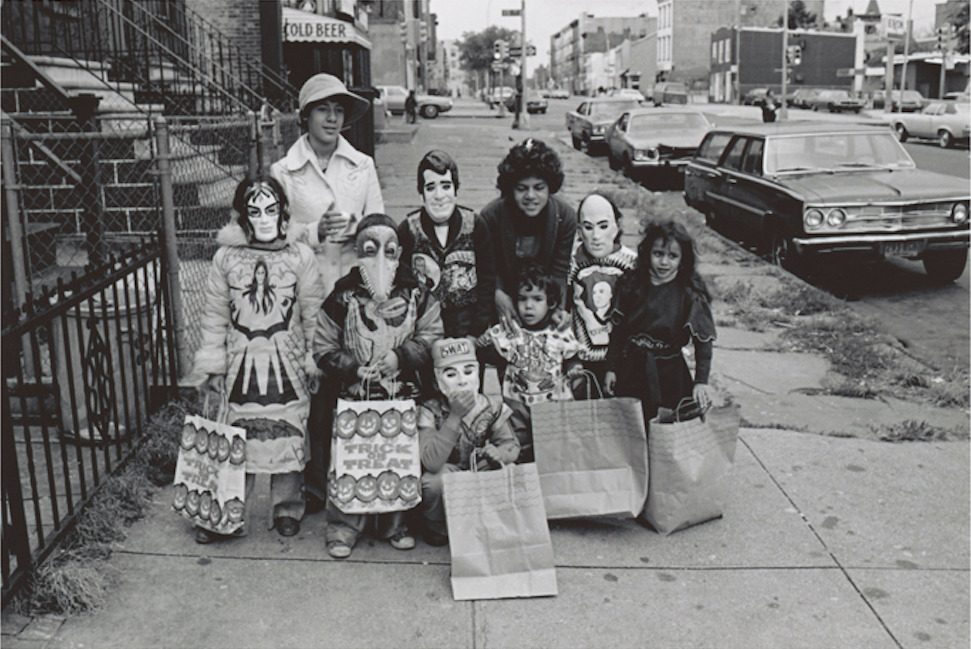
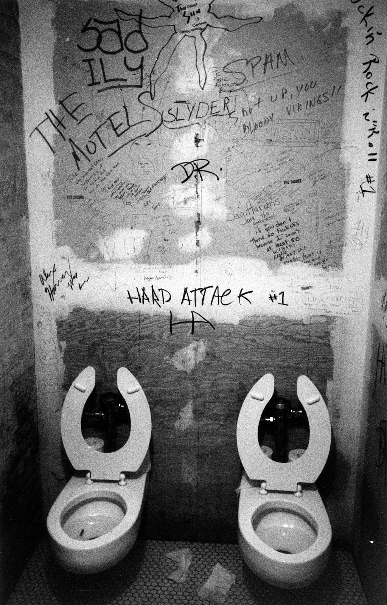
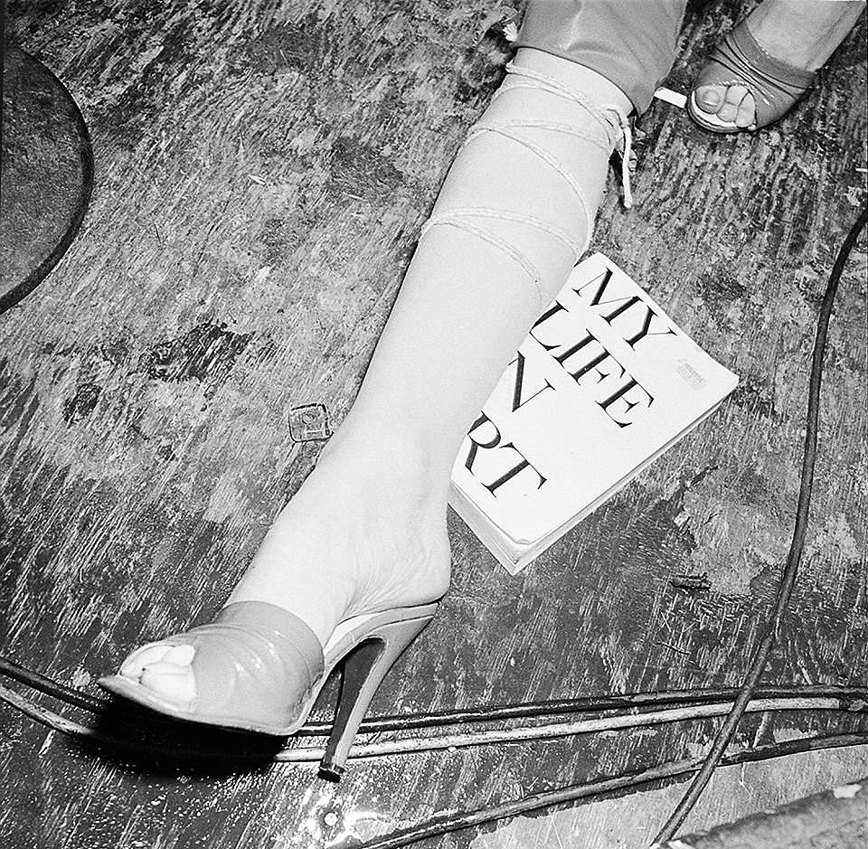

Greenwich Village Halloween parade in the 80s.
Greenwich Village Halloween parade in the 80s.

Halloween in NYC, 1970s

Halloween in the 70s
Halloween in Greenwich Village, 1982
Halloween on Central Park West, 1966

No points for neatness.

Girls Girls Girls - Time Square
Esquire, January 1976
Photography by Snowdon
Say ‘cheese’. Times Square, 1989.

Broadway and 68th
Oh hai!

Times Square, 1977

Playing cards in Washington Square Park, 1989
Mercer St, 1989
Juilliard under construction in the late 1950s

Winter on the lower east side, 1976. Can’t tell where the snow ends and the garbage begins.
Columbus Circle, 1969

Coney Island, 1948

Uncredited Photographer Cop Onboard the Subway, New York City 1965
Uncredited Photographer The J Subway Line Heading from Jamaica, Queens to Brooklyn, New York City c.1990

Dedicating Fashion Avenue, 1972

St. Mark’s Place in 1978
Houston & Forsyth, 1970
Guardian Angels all in a row, 1980

1 train at 225th St, 1986

Rockettes on the way to rehearsal at Radio City, 1964

Descent.


Probable serial killer on Riverside Drive and 87th Street, 1968

Bus dropping off bored kids to sit on the Circle Line and get more bored. 1979.
Autumn in Soho, 1982
Awwww, ain’t that little boombox cute!

Whoopsie. 1985.

Guardian Angels, 1985
Funny how the people who claim to know what God wants can never agree on what God wants. Times Square, 1988.
Phone call on the upper west side, 1966. I’m thinking 96th and Broadway, but can’t be sure.

Tennis great Arthur Ashe rides the subway, 1968







CBGB Club - 1970s

Cards ‘n Books on 23rd and 3rd, 1972

5th Ave and 45th St, 1980


Melrose Avenue near 149th Street, Bronx, 1973
New York looked pretty spent during the 1970s. 23rd St and adandoned West Side Highway. A battered Ford Galaxy 500 drives by on cobblestones. April 1975 by wavz13 on Flickr.

B69 bus pulling away from the Sanders Theater, Prospect Park West and 14th Street, Park Slope, Brooklyn, 1972
Angela Lansbury and the 59th St Bridge, 1966
Halloween, 70s style

Smoke break on Madison Ave, 1982

1980 shorts

The haves en route to Zabar’s. The have nots en route to nowhere.

Party in Tompkins Square Park, 1968

1971 shuttle trip